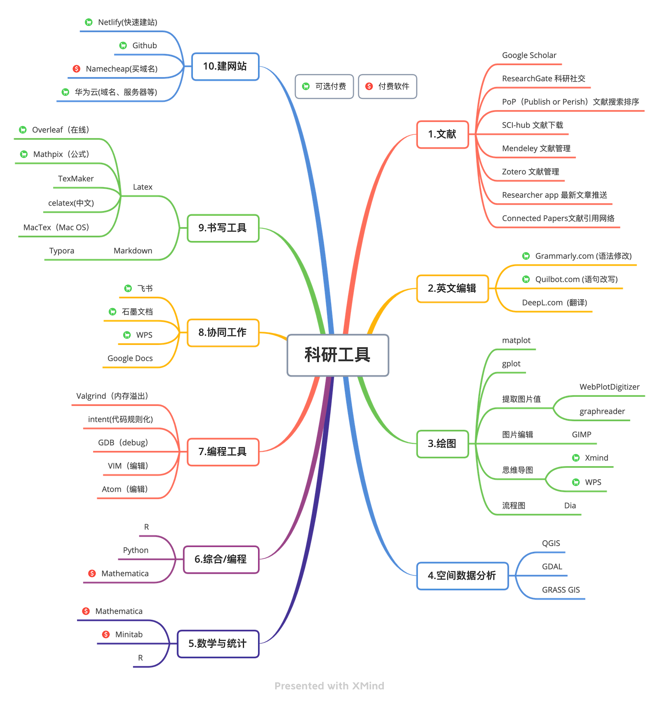

Chapter 7 工作技能
7.1 科研工具
推荐使用的科研软件请先查看下面这张图。绝大部分为免费软件，个别是收费软件。 
7.1.1 QGIS
QGIS是一款免费、开源的地理信息系统（GIS）软件，相对于其他商业GIS软件，它有以下几个优势：
免费：QGIS是一款完全免费的GIS软件，用户可以自由地下载、使用和修改它。
开源：QGIS是一个开源软件，这意味着用户可以随意查看其源代码、修改和扩展其功能，同时也可以通过用户社区获得技术支持。
跨平台：QGIS可以在Windows、MacOS、Linux等多个操作系统上运行，并提供相应的安装程序和二进制文件。
多功能：QGIS具有很多功能，包括地图制作、数据处理、空间分析、地理编码和地理数据编辑等。它支持许多不同的文件格式，包括ESRI shapefile、MapInfo文件、PostGIS和Oracle空间数据库、GeoTIFF和其他栅格数据格式等。
易于使用：QGIS提供了易于使用的用户界面，包括地图绘制、数据导入和空间分析等功能。此外，用户可以通过插件来扩展软件的功能，满足不同的需求。
社区支持：QGIS有一个活跃的用户社区，用户可以通过该社区获得技术支持、交流使用经验和分享资源等。
综上所述，QGIS是一款免费、开源、跨平台、功能丰富、易于使用且有着强大的社区支持的GIS软件。它是许多研究人员、学生和行业专业人士的首选工具之一。
7.2 ssh远程登录
ssh是默认的远程服务器访问软件，小巧、安全、快速。 命令一般执行方式如下：
ssh [username@remotehost]第一次登录要求在本地保存登陆指纹,输入y确认。然后屏幕提示输入远程的登录密码。
其他登录参数：
- -p 22 - 采用22端口登录。ssh的默认端口是22。
- -Y - 启用远程GUI
- -i [file] - 使用指定的登录密钥
Windows平台登录时可使用PowerShell；但是Windows平台推荐使用MobaXTerm软件。 在Linux或者mac平台可以直接使用terminal命令行；Mac平台也推荐使用iTerm，可以使用多开方式。
ssh同时支持文件传输，例如sshfs和sftp。 快速的文件传输和查看，在Mac和Linux平台，可以使用CyberDuck。
7.3 wget批量下载数据
关于批量下载数据，请参考博客文章： https://www.shulele.net/zh/eosdata/。
7.4 Linux操作系统
7.4.1 用户名管理
新建用户userx
sudo useradd -s /bin/bash -d /home/userx/ -m -G sudo userx/bin/bash 是用户默认的登录shell界面。
/home/userx/ 使用户的Home目录位置。
-G sudo 是指定用户的所属的组。sudo组用户则在输入sudo命令时的具有root权限。
登录指定用户userx
su userx7.4.2 Linux常用的命令。
部分命令的默认ubuntu系统中不存在时，需要使用apt安装。
- 安装软件apt:
sudo apt install tree - man：使用man ls则可以查看ls命令的使用说明；man命令组合可以看所有命令的说明。
- cd：切换不同的目录
- ls查看目录和文件
- cat 在屏幕打印出文本文件
- more, head, tail，查看文本文件
- tree 查看目录树结构
- ip a： 查看服务器IP信息
- lsblk：查看硬件设备
- df: 查看磁盘设备挂载情况
- du: 查看磁盘使用率
- jobs: 查看后台运行的用户程序
- ps：查看进程
- kill： 杀死/关闭某一个进程
- scp：通过ssh通道拷贝数据
- rsync: 使用数据更新方式拷贝数据，支持本地数据拷贝或者远程ssh数据拷贝。
- wget/curl: 数据下载
- mount/umount：挂载和卸载磁盘。
- grep正则表达式，用于查找文件里符合条件的字符串。
- find：用于查找目录中的文件
7.5 R语言
R是高效且灵活的编程语言，可以高效的完成数据读写、统计分析、空间数据处理处理、并行计算等任务。
R语言是一种免费的、开源的数据分析和统计建模语言，相对于其他统计分析软件，R语言有以下显著优势：
免费且开源：R语言是一款完全免费、开源的软件，用户可以自由地下载、使用和修改它。这使得R语言成为许多研究人员、学生和行业专业人士的首选工具之一。
具有强大的统计分析能力：R语言提供了许多统计分析和建模的方法，包括线性回归、非线性回归、时间序列分析、聚类分析、因子分析和机器学习等。R语言还提供了许多常用的数据处理和可视化工具，如数据清洗、数据可视化和报告生成等。
社区支持：R语言拥有一个庞大的用户社区，用户可以通过该社区获得技术支持、交流使用经验和分享资源等。R语言社区提供了大量的免费学习资源，包括教程、示例代码和数据集等。
可扩展性：R语言可以通过许多扩展包（packages）来扩展其功能。这些扩展包提供了各种各样的功能，从数据可视化到高级统计分析和机器学习。
易于学习和使用：R语言拥有易于学习和使用的语法和语言结构，许多人认为R语言比其他统计分析软件更加容易学习和使用。
跨平台支持：R语言可以在Windows、MacOS、Linux等多个操作系统上运行，并提供相应的安装程序和二进制文件。
本研究组的rSHUD(https://github.com/shud-System/rshud), AutoSHUD(https://github.com/shud-System/autoshud)和全球数据云平台(https://www.shuddata.com)都由R语言实现。
具体的R语言教程请参考《R在地球科学中的应用》https://www.shud.xyz/bookr/。